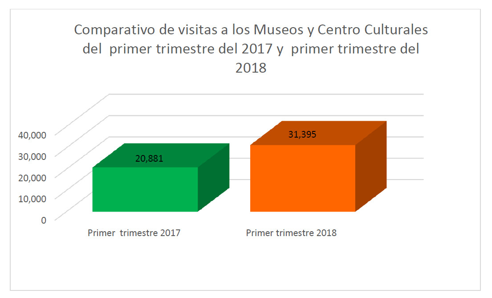
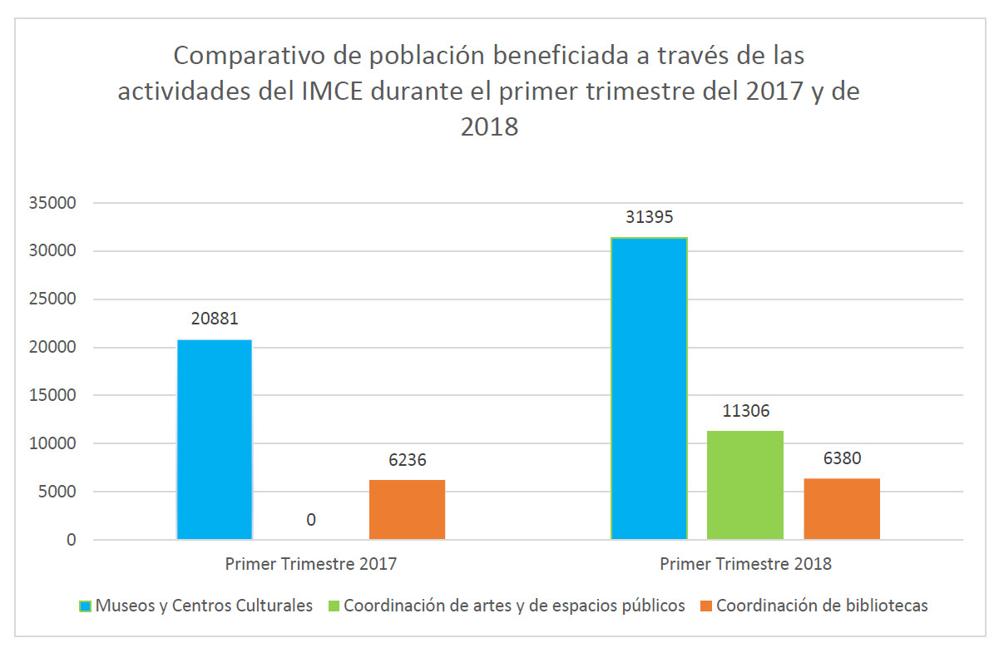
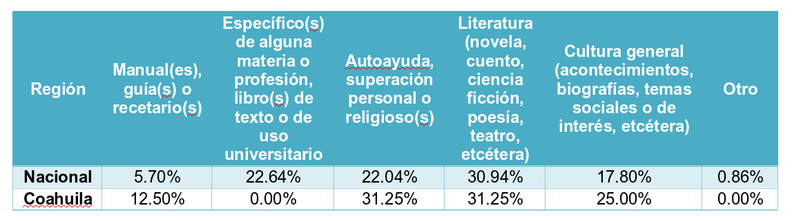

Aunque la infraestructura cultural de los municipios de la Zona Metropolitana de La Laguna, aún es insuficiente comparada con la de otras ciudades importantes del país, cada vez crece más la población que se beneficia de las actividades en centros culturales y bibliotecas públicas.
De acuerdo con datos del INEGI, la Secretaría de Cultura federal y el Instituto Municipal de Cultura y Educación de Torreón (IMCE), existen 21 museos en La Laguna, de los cuales 14 están ubicados en Torreón: 3 pertenecen al sector privado y 11 al sector público.
Se cuenta con cuatro teatros en Torreón: Teatro Isauro Martínez, Teatro Nazas, Teatro Alfonso Garibay y Teatro de Cámara de la UA de C. Y según datos del 2015 del Sistema de Información Cultural (SIC), hay alrededor de 18 librerías en nuestro municipio; así como 31 biblioteca públicas en Torreón, Matamoros, Gómez Palacio y Lerdo.
Tan sólo en Torreón la cifra de usuarios de las bibliotecas públicas para el primer trimestre de 2018, alcanza casi los 20 mil. La biblioteca con mayor cantidad de usuarios es José García de Letona (ubicada en La Alameda), tanto en 2017 como en 2018. En el periodo comprendido entre enero- marzo 2018 en todas las bibliotecas se prestaron más de 24 mil servicios, de acuerdo con el IMCE.
Las actividades de asistencia a fomento a la lectura en las bibliotecas, fueron en el primer trimestre de 2017: 6,236 y de 6,380 en el primer trimestre de 2018.
La cobertura de bibliotecas es amplia en La Laguna y en el país. En México, la Red Nacional opera actualmente a 7,413 bibliotecas públicas que se encuentran establecidas en 2,282 municipios, - 93.2 por ciento del total existente en el país-, y proporciona servicios bibliotecarios gratuitos a más de 30 millones de usuarios anualmente.
Sin embargo, lo anterior no significa que se haya elevado sustantivamente el nivel de lectura per cápita. Tanto en el país como a nivel estatal y municipal, aún existen diferencias comparado con los niveles de lectura de otros países de Latinoamérica.
Según el Módulo de Lectura del INEGI, en México se leen 1.40 libros por año, mientras que en Coahuila 1.16 libros. A nivel nacional como a nivel estado, los libros que se leen en mayor medida son: novelas, cuentos, ciencia, ficción, poesía, teatro, etc.; los cuales entran en la categoría de literatura.
En la misma proporción que los libros de literatura, también se leen en Coahuila los libros de autoayuda, superación personal y religiosos. Los libros que se leen en menor medida a nivel nacional son los manuales, guías o recetarios, dato que también comparte Coahuila, y los libros clasificados en otros.
Crece asistencia a centros culturales
El IMCE en Torreón administra cuatro museos municipales y tres centros culturales. De acuerdo con su primer informe trimestral, entre enero y marzo de la gestión anterior se contó con una asistencia de 20,881 visitantes únicamente a Museos y Centros Culturales. Con respecto a la información mensual reportada por la coordinación de museos y centros culturales de la actual administración, se tuvo una actividad de 31,395 visitantes en los museos y centros culturales la cual, comparada con datos generados del mismo periodo de la administración anterior, presenta un incremento del 50.35%.

Además, se informó que a través de las distintas Coordinaciones de Artes y Espacios Públicos, la población de Torreón puede acceder ahora de una amplia oferta de eventos a los cuales puede asistir no solo en los recintos culturales municipales, sino en distintos espacios como plazas públicas, negocios, instituciones educativas entre otros. En términos cuantitativos, en estos espacios se logró un incremento de 21,964 asistentes mismo que se puede traducir en un 81% con respecto al primer trimestre de 2017.
La asistencia a eventos culturales en espacios públicos se da en mayor medida en la Ruta Poniente, la cual se encuentra en la avenida Morelos e inicia en la calle Leona Vicario, continuando por las calles Treviño, Falcón, Blanco, Acuña, Rodríguez, Cepeda, Valdez Carrillo y Zaragoza. Por otra parte, la asistencia a la Línea Verde ha crecido en febrero y marzo, siendo este último el mes más significativo, pues se observa un crecimiento casi del 80%; informó el IMCE.

LECTURA EN MÉXICO Y COAHUILA

Fuente: INEGI
Fuente de las gráficas: Instituto Municipal de Cultura y Educación de Torreón (IMCE) 2018.